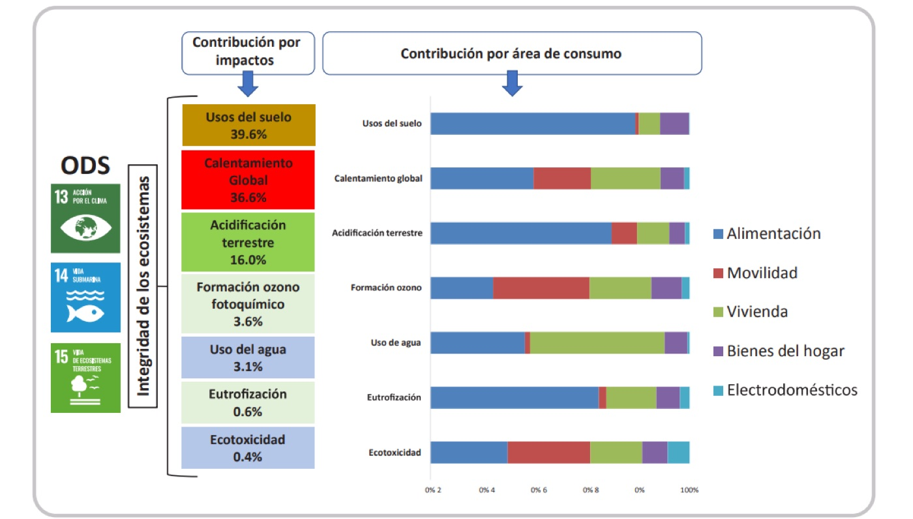

Saber, querer y hacer son tres imprescindibles en la lucha frente a la emergencia climática. Este capítulo parte de la idea de que el propósito —entendido como razón de ser, enraizada en conocimientos, creencias y valores— se cristaliza en comportamiento, y se pregunta qué papel cumplen las empresas y su comunicación en la transformación del modelo económico y social. Para ello profundiza en tres conceptos clave: la ciudadanía activa, las empresas con propósito y la comunicación con propósito. Analiza cómo el exceso de greenwashing y otras formas de washing limitan el acceso a una información que permita a las personas actuar, y cómo las organizaciones con propósito pueden convertirse en catalizadoras del activismo ciudadano. El capítulo recorre el paso del modelo informativo al diálogo genuino con los públicos, la innovación comunicativa y la evaluación de impactos positivos y esperados, y propone una plantilla básica para diseñar un plan de comunicación con propósito.
Capítulos de libro · 2026, en prensa
Ciudadanía activa y comunicación con propósito
En: A. Álvarez-Nobell, I. Ruiz-Mora y M.-B. Barroso (coords.), Repensar la confianza: Organizaciones con propósito, ciudadanías y comunicación (pp. 89–111). Tirant Humanidades

Resumen
Texto completo disponible próximamente.
← Volver a publicaciones